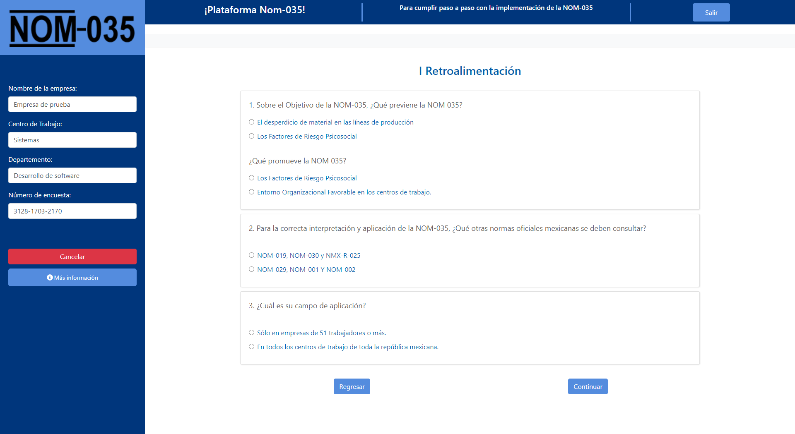
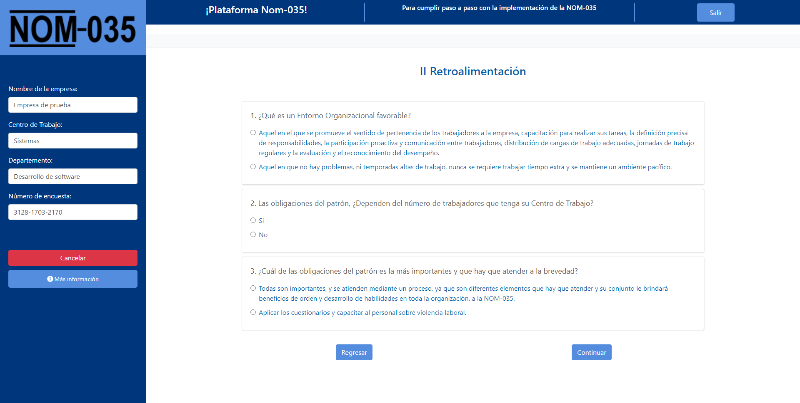

Ingresa en tu navegador al siguiente link: tlacontadores.com, Presione el botón que dice Aplicar Cuestionarios.
Para dirigirse a esta opción
de clic aquíSe mostrará la siguiente ventana donde pide ciertos datos como lo son Código de empresa, Código de centro de trabajo, estos datos son proporcionados por su instructor.
Después de ingresar esos datos, pedirá que identifique el Departamento al cual pertenece; una vez seleccionado y al haber aceptado los términos y condiciones de nuestro servicio, podrá ingresar a la siguiente página.
Para dirigirse a esta opción
de clic aquíEn la siguiente venta aparecen dos apartados, uno donde se muestran los datos que ingresamos en la página anterior y otro donde aparecen dos botones, el primero es para ingresar por primera vez al proceso y el segundo es para darle continuidad.
Al darle clic al primer botón, se nos abrirá una pequeña ventana con instrucciones, debemos de leer muy bien para poder comenzar con el proceso.
Cuando damos clic en el segundo botón, nos aparecerá un pequeño recuadro donde ingresaremos nuestra clave y así poder continuar en donde nos quedamos.
Una vez iniciada la encuesta, aparecerá la siguiente página en donde quedará un registro del avance en el proceso de la aplicación de cuestionarios, cada que termine un punto volverá a visualizar la página con el avance actualizado y se activará el siguiente botón para proceder a las nuevas secciones.
Nota: Si se encuentra en esta página y por algún motivo debe posponer el proceso, podrá hacerlo dando clic al botón de “Cancelar” y reanudarlo en otro momento simplemente ingresando el número de encuesta en el recuadro de la página anterior.

Al darle clic en el botón de ingresar del primer paso, accederemos a la siguiente página en donde se mostrará una serie de instrucciones que se deben de tener en cuenta al momento de la aplicación, así como una breve explicación de lo que es la NOM-035 y en que consiste.
Para continuar, damos clic en el botón de comenzar el curso, una vez finalizado procedemos a ingresar al siguiente paso.
El siguiente paso es ingresar a la primera retroalimentación, una serie de preguntas que son necesarias para saber si se comprendió bien el primer tema.
La retroalimentación se divide en tres partes con tres preguntas cada una, excepto de la última parte donde se muestran 2.
Nota: Si obtienes alguna respuesta incorrecta aparecerá el siguiente texto en rojo y se tendrá que contestar de nuevo.
“Es necesario seleccionar las respuestas correctas.”
Al darle clic en el botón de ingresar a la parte II del curso, accederemos a la siguiente página en donde se mostrará un video. Cuando el video finalice, damos clic al botón siguiente y nos mostrará la página de Avance de la aplicación de nuevo para seguir con el siguiente paso.
El siguiente paso es ingresar a la Segunda retroalimentación, la dinámica es la misma, es una serie de preguntas que son necesarias para saber si se comprendió bien el primer tema.
La retroalimentación se divide en tres partes con tres preguntas cada una, excepto de la última parte donde se muestran 2.
Nota: Si obtienes alguna respuesta incorrecta aparecerá el siguiente texto en rojo y se tendrá que contestar de nuevo.
“Es necesario seleccionar las respuestas correctas.”
Cuando el proceso de contestar las preguntas de la segunda retroalimentación finalice, nos dirigirá a la siguiente página de finalización del curso donde hay 2 botones, uno donde nos podemos regresar a la retroalimentación y otro para dirigirnos a la página de avance de la aplicación y dar por finalizado el curso.
El noveno paso consiste en dar clic al botón de ingresar de la Guía Referencia I.- Acontecimientos Traumáticos, nos mandará a la siguiente página, donde aparece una serie de preguntas que tendrá que contestar con la mayor sinceridad posible para poder evaluarlo de forma correcta.
Nota: Recuerde que en este apartado no existen las preguntas correctas o incorrectas.
En esta página aparecen 2 botones para desplazarnos, uno es para volver al paso anterior y el otro que es para avanzar al siguiente paso.
Una vez contestado el cuestionario podemos avanzar al siguiente.
El décimo paso consiste en dar clic al botón de ingresar de la Guía Referencia II.- Factores de Riesgo Psicosocial.
Para responder las preguntas siguientes considere las condiciones de su centro de trabajo, así como la cantidad y ritmo de trabajo.
Nota: la Guia de Referencia II solo estará disponible si la empresa cuenta de entre 16 y 49 empleados.
Una vez finalizada la guía II nos dirigirá a la página de Avance de la aplicación donde podremos ingresar al siguiente paso.
El undécimo paso consiste en dar clic al botón de ingresar de la Guía Referencia III.- Evaluación del Entorno Psicosocial.
Para responder las preguntas siguientes considere las condiciones ambientales de su centro de trabajo.
Nota: la Guía de Referencia III solo estará disponible si la empresa cuenta con 50 o más empleados.
Ingresamos al último paso, Se habilitarán nuevos cuestionarios que tratan sobre los datos del trabajador, datos laborales y si se ha sufrido algún acontecimiento traumático, se habilitara uno más para conocer sobre este.
Llegamos al final del proceso, gracias por tomarte el tiempo de contestar.